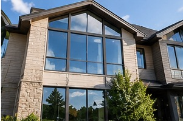
Residential Windows
Inside and out, frames and sills included. Bungalows through to three storey walkouts.
Houses, storefronts and offices. Glass, frames, sills and tracks, inside and out, done with poles and ladders by people who do this all day.
Send a photo of the building and we will send back a price. Exteriors from thaw to freeze-up, interiors all year.
Anyone can wipe the middle of a pane. What you notice a week later is the edge that was never dried, the track still full of grit, and the frame nobody touched.
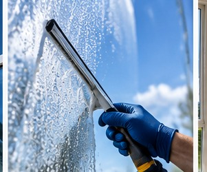
The blade gets detailed into every corner and the perimeter is dried by hand. That is where streaks live.
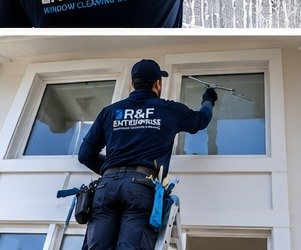
Ladder work and water fed poles. Gables, stairwell glass and skylights included, as long as we can reach them safely.
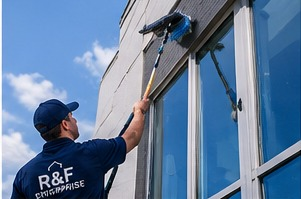
Sprinkler spotting is mineral. It gets its own treatment and its own line on the quote, because it takes its own time.
Photo in, price out. Most of our work gets arranged in four or five messages and nobody has to be home.
Everything here is window work. We do not do eavestroughs, siding or pressure washing, and we would rather point you at someone who does than take the job.

Inside and out, frames and sills included. Bungalows through to three storey walkouts.
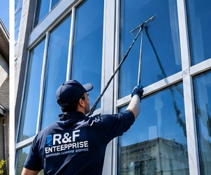
Offices, clinics and walk-up buildings on a set schedule, done before your doors open.
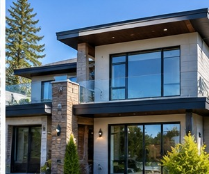
Weekly or biweekly frontage for shops and restaurants. Fingerprints, salt film, the lot.
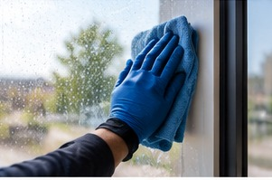
Winter work, mostly. Condensation marks, cooking film and whatever the dog left on the patio door.
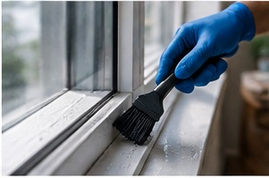
Screens pulled, washed and refitted. Tracks vacuumed out before they get wiped, not after.
Sprinkler spotting and mineral haze. The ones a normal clean leaves behind.
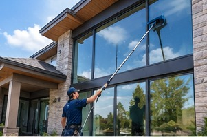
Stairwell glass, vaulted gable windows and skylights, reached from poles and ladders.
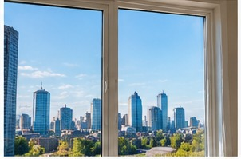
Stucco splatter, labels, tape residue and the fine grit left in every track after a build.
It is the same on a bungalow and on a strip mall. Skip a step and you can see it from the sidewalk.
Vacuumed out dry. Wet them before this and the grit turns to paste that works its way back onto the glass.
Soap and a soft brush or a strip washer, worked long enough to lift the film rather than smear it.
Blade detailed into the corners, then pulled in overlapping passes. Rubber gets changed when it skips, not when it fails.
Perimeter, sill and frame done by hand, then checked from an angle in the light.
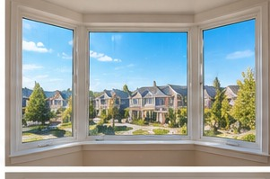
Bay windows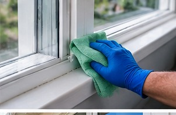
Sills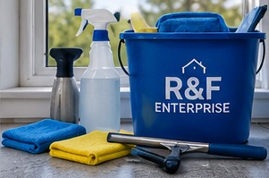
The kit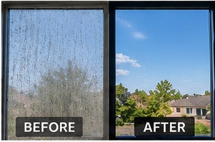
Illustration onlyBy the window, counted off a photo. Text us a picture of the front and back of the house and say whether you want inside done as well. You get a number back, usually the same evening.
Both. Most people book exteriors on their own in summer and add the insides in the autumn, before the windows get shut for six months.
Until it stops holding above freezing, which in Edmonton is usually some time in late October. Water on glass in a hard frost freezes before it can be squeegeed off, and the cold makes rubber skip. Interiors carry on all winter.
Those are mineral, not dirt, and a normal wash will not shift them. They need an acidic treatment and a bit of patience. Mention them when you book so the right kit is on the van.
Screens come out and get washed if you want them done. Tracks get vacuumed before anything wet goes near them, otherwise you just make grey paste in the corners.
Three storeys from a ladder or a water fed pole. Anything needing rope access or a swing stage is a different trade and we will say so rather than improvise.
Stand across the street, photograph the front of the building, and text it over. That is usually enough to price the job.